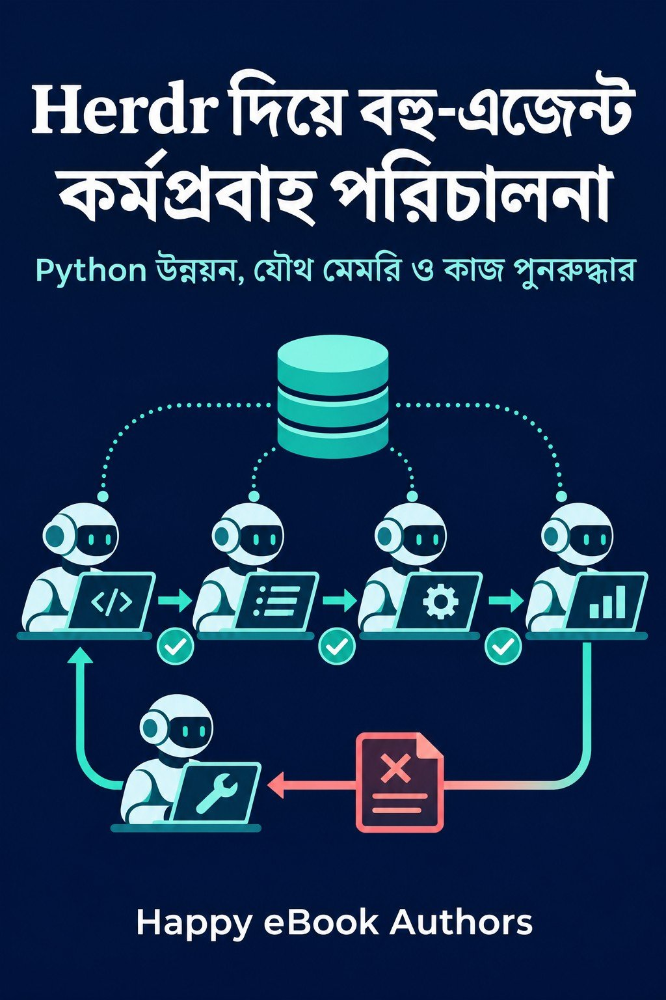

Google Play Books
Herdr দিয়ে বহু-এজেন্ট কর্মপ্রবাহ পরিচালনা
Python উন্নয়ন, যৌথ মেমরি ও কাজ পুনরুদ্ধার

付費購買提供試閱版AI Coding / AI 學習
Herdr দিয়ে বহু-এজেন্ট কর্মপ্রবাহ পরিচালনা
Python উন্নয়ন, যৌথ মেমরি ও কাজ পুনরুদ্ধার
এই বইয়ে Herdr TUI দিয়ে নির্ভরযোগ্য বহু-এজেন্ট কর্মপ্রবাহ তৈরি ও পরিচালনা দেখানো হয়েছে। ছোট Python প্রকল্প থেকে শুরু করে workspace, pane, task contract, স্বাধীন code review, যাচাইযোগ্য handoff, পাঁচ-এজেন্ট ওয়েবসাইট ও প্রযুক্তিগত গবেষণা, automated pipeline এবং পুনরুদ্ধারযোগ্য দীর্ঘস্থায়ী দল পর্যন্ত ধাপে ধাপে এগোন। উদাহরণ, পরীক্ষা ও স্পষ্ট গ্রহণযোগ্যতার শর্ত ব্যবহার করে agent-এর কাজ, ফল এবং ব্যর্থতা যাচাই করুন। এই বইটি Herdr terminal interface নিয়ে; graphical hc app আলাদা পণ্য।